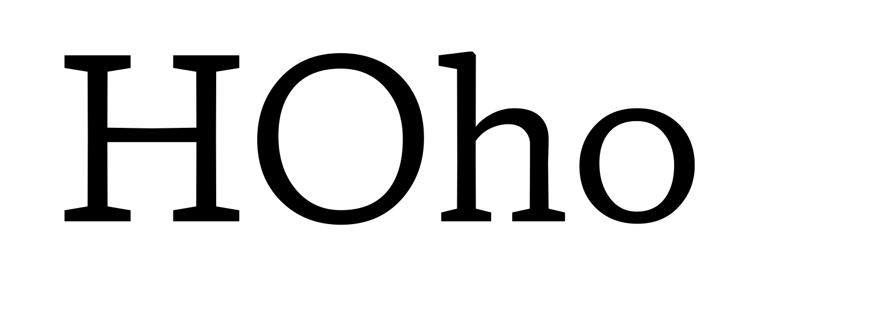
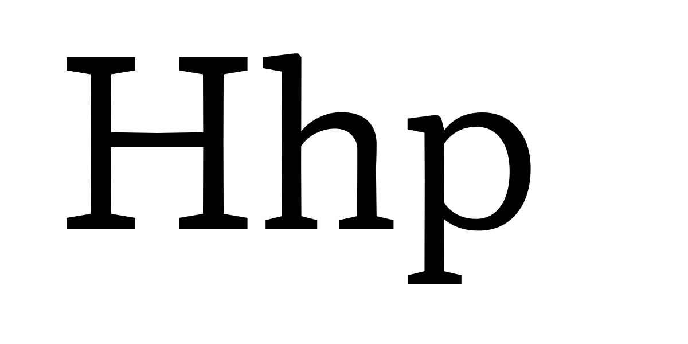
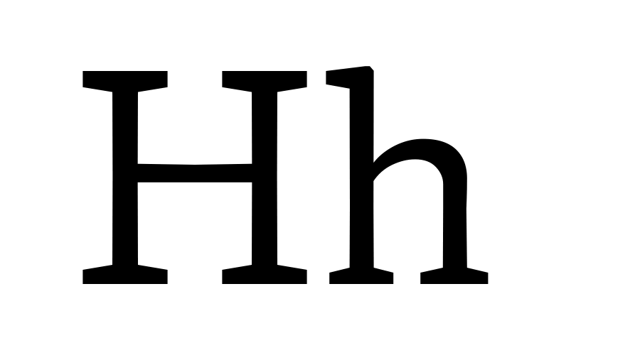
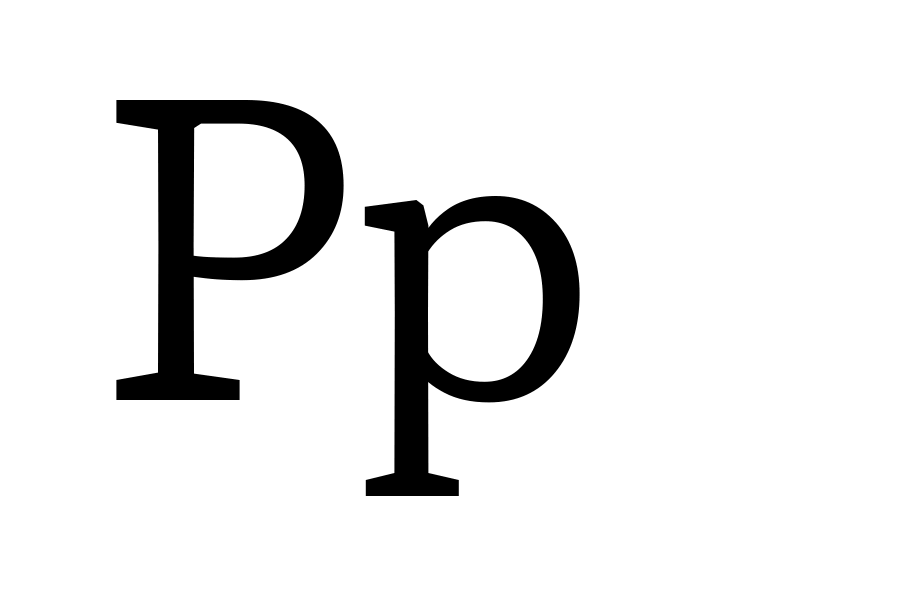
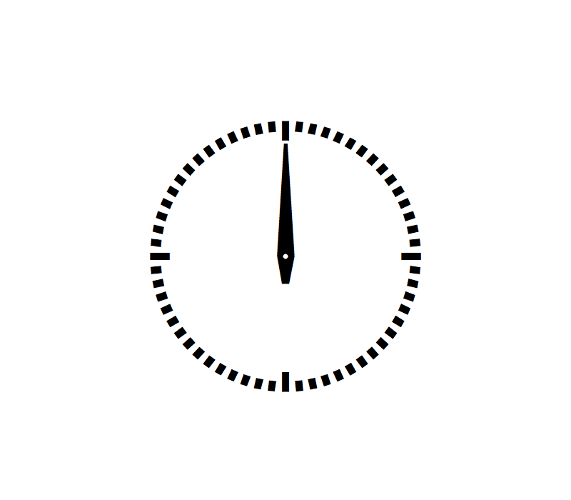

Variations Proposal Introduction
This guide was prepared in July 2017 for presentation to the public, the specification’s owners, and the OpenType Variations working group. Our goal is to record what we have learned about variable fonts and have put into practice, which we believe will be generally useful to the specification, and to propose a new, systematic approach to registering and using axes.
This proposal does not seek to classify the designs of typefaces parametrically, only what the values of the parameters are. Furthermore, it is offered as a beginning, suggesting the need for—but not containing—suggestions for many important attributes of non-Latin fonts.
The registration of the axes here is also intended to be used as part of a system including the registration of what function an axis performs for programs and/or users along the existing path from script selection to the rendered glyph in a document, aka the Mantra. Documentation of that part of the system, including the registration of what function an axis provides, is still in development and will follow soon.
A. Primary Type Axes
Type users are familiar with the attributes of a typeface family that combine to make up its appearance. Traditionally, these attributes are available as named and instantiated styles in font families. Some of these attributes are already recorded in fonts conforming to the OpenType v1.0 specification, as values in the OS/2 table, and in other tables of the SFNT format in general.
Today's font families contain instances pertaining to attributes of registered axes of OpenType, like width, weight, and optical size. In addition, some existing font families contain instances pertaining to grades, descender length, multiscript font mixing for different vertical proportions, and font families contain instances made for specific output, or with specific data to suite particular platform requirements.
This proposal is for a new and more complete set of typographic axes, with a unified value system, concern for non-Latin, responsive typography, compression, and more. The registration of a full set of attributes allows type developers to combine the modern, potentially much larger font family into a single file; it allows software developers and educators to have a clearer picture of how typography is shaped by the basic attributes; and it allows type users to control the attributes more precisely, whether that control is programmatic or manual via a user interface.
B. Treatment Axes
Many treatments of typography—outlining or underlining, as well as adding drop shadows and more—are currently available to users via page description languages and applications, where only a uniform, size-independent transformation of all the glyphs of an instance is the result.
Because fonts usually provide a better solution than smearing regular type for “bold” or “obliquing” it for “italic,” and because optical size (the most common treatment of all) is a registered axis, variation axes can provide these and other treatments better than applications. This gives users more precise control per treatment, and per glyph, while also informing applications that these axes exist, and what their value systems are. It also relieves apps from having to provide the treatment, should the user desire to do so, with the font providing the means.
C. Non-Latin Axes
Today’s multiscript type designer faces two major options when mixing more than one script in a typeface family: to compromise one or both scripts to the ideals of the other; or, alternatively, to make multiple instances of the font to provide uncompromised versions of each.
The compromises occur in all of the typographic parameters listed in A. Primary Type Axes, and surface in the choices that need to be made in presenting a unified appearance of width, weight, and height among glyphs of different scripts. These compromises come in a variety of sizes, from small (as when Latin and Cyrillic need to work together) to large (as when Chinese and Arabic have to work together). And, of course, there are the supersized compromises in OS fonts, where the typeface family contains fifty-three scripts.
In these scenarios, the type developer is challenged to come up with a single harmonious solution, per size, to the weights and widths of each glyph, in order to form the correct relationship between transparent and opaque across all of the glyphs of the scripts involved. If users don’t like the type designer’s solutions, they are free to roam the width and weight axes and either programmatically or manually redefine the interscript solutions to weight and width. It’s important to understand that this option is open to the type developer and user without script-specific opaque and transparent attributes, because the proper weight and width per style are solvable in the hands of developers and users without registered weight axes for every script.
Alignments operate differently in typography. So in variable fonts, they must be able to operate independently of one another at any given weight, width, and size, ahead of whatever decisions occur in those attributes. Until now, all of the scripts of Unicode have shared what could be read as Latin alignments in the OpenType spec.
This proposal does not prevent type developers from continuing to share one set of registered alignments among all the scripts of Unicode. Rather, it suggests that if variable font developers want to maintain compression, performance, and quality in multiscript design, then registered axes for the alignments specific to each script are required. And Chinese alignment values that are definable independently of Latin alignment values are a good place to start.
D. Motion Axes
The essence of designing realistic motion in media with variable fonts requires giving users and programs a simple solution to the following equation: Distance = Rate × Time. The proposed axes enable type developers to define the distances their animations move per cycle of animation, so motion-graphics designers can solve this equation relative to size of use without trial and error on each glyph.
As variations will undoubtedly be put to the task of animation, these axes create a common meeting point between design and use.
E. Glyph Axes
The existing OpenType specification allows composites—i.e., reference from a glyph to use another glyph, possibly repositioned or otherwise transformed—to save space and time when developing fonts that repeatedly use the same shape.
In traditional typefounding, a font developer would not hesitate to create fractions by using a glyph from a smaller master of the same style. In variable fonts, using the same contours of a glyph repeatedly (with deltas for weight, width, and optical size) opens up the possibility of using those and other instances for many such purposes, but only if the developer can pinpoint the instance location of particular glyphs, or glyphs of a particular feature, along a registered axis.
1. xtra
Tag: xtra
Name: x transparent
Description: assigns a “white” per mille value to each instance of the design space
Valid numeric range: -1000 to 2000
Scale interpretation: values can be interpreted as per-mille-of-em
Recommended “normal” value: sample value 400
Suggested programmatic interactions: applications may choose to select a variant in connection with an input, or it may be programmatically used
Suggested user interactions: users may choose to program a variant in connection with direct or conjunctive input for a page description language, or via a user interface
Related axis information: users may choose to program a variant in connection with direct or conjunctive input for a page description language, or via a user interface
Demo
2. xopq
Tag: xopq
Name: x opaque
Description: assigns a “black” per mille value to each instance of the design space
Valid numeric range: -1000 to 2000
Scale interpretation: values can be interpreted as per-mille-of-em
Recommended “‘normal”’ value: sample value 88
Suggested programmatic interactions: aApplications may choose to select a variant in connection withto an input or it maymight be programmatically used
Suggested user interactions: uUsers may choose to program a variant in connection withto direct or conjunctive input for a page description language, or via a user interface
Related axis information: uUsers may choose to program a variant in connection withto direct or conjunctive input for a page description language, or via a user interface
Demo

3. ytra
Tag: ytra
Name: y transparent
Description: assigns an overall “white” per mille value to each instance
Valid numeric range: 0 to 2000
Scale interpretation: vValues can be interpreted as per-mille-of-em
Recommended “‘normal”’ value: sSample value 884
Suggested programmatic interactions: aApplications may choose to select a variant in connection withto an input, or it maymight be programmatically used
Suggested user interactions: uUsers may choose to program a variant in connection withto direct or conjunctive input for a page description language, or via a user interface
Related axis information: uUsers may choose to program a variant in connection withto direct or conjunctive input for a page description language, or via a user interface
Demo
4. yopq
Tag: yopq
Name: y opaque
Description: assigns a “black” per mille value to each instance of the design space
Valid numeric range: -1000 to 2000
Scale interpretation: vValues can be interpreted as per-mille-of-em
Recommended “‘normal”’ value: sSample value 116
Suggested programmatic interactions: aApplications may choose to select a variant in connection withto an input or it may be programmatically used.
Suggested user interactions: uUsers may choose to program a variant in connection withto direct or conjunctive input for a page description language, or via a user interface
Related axis information: uUsers may choose to program a variant in connection with direct or conjunctive input for a page description language, or via a user interface
Demo

5. ytlc
Tag: ytlc
Name: y transparent lowercase
Description: assigns a “white” per mille value to each instance of the design space
Valid numeric range: 0 to 1000
Scale interpretation: Values can be interpreted as per-mille-of-em
Recommended “normal” value: Sample value, 500
Suggested programmatic interactions: Applications may choose to select a variant in connection with an input, or it may be programmatically used.
Suggested user interactions: users may choose to program a variant in connection with direct or conjunctive input for a page description language, or via a user interface
Related axis information: users may choose to program a variant in connection with direct or conjunctive input for a page description language, or via a user interface
Demo
6. ytuc
Tag: ytuc
Name: y transparent uppercase
Description: a “white” per mille value for each uppercase height in the design space
Valid numeric range: -1000 to 1000
Scale interpretation: values can be interpreted as per-mille-of-em
Recommended “normal” value: sample value 725
Suggested programmatic interactions: applications may choose to select a variant in connection with an input or it may be programmatically used.
Suggested user interactions: users may choose to program a variant in connection with direct or conjunctive input for a page description language, or via a user interface
Related axis information: users may choose to program a variant in connection with direct or conjunctive input for a page description language, or via a user interface
Demo

7. ytde
Tag: ytde
Name: y transparent descender
Description: assigns a “white” per mille value to each instance of the design space
Valid numeric range: -1000 to 0
Scale interpretation: values can be interpreted as per-mille-of-em
Recommended “normal” value: sample value -250
Suggested programmatic interactions: applications may choose to select a variant in connection with input, or the axis may be programmatically used with input like linespacing
Suggested user interactions: users may choose to program a variant in connection with direct or conjunctive input for a page description language, or via a user interface
Related axis information: users may choose to program a variant in connection with direct or conjunctive input for a page description language, or via a user interface
Demo
8. ytas
Tag: ytas
Name: y transparent ascender
Description: assigns a “white” per mille value to each instance of the design space
Valid numeric range: 0 to 1000
Scale interpretation: values can be interpreted as per-mille-of-em
Recommended “normal” value: sample value 750
Suggested programmatic interactions: applications may choose to select a variant in connection with an input, or it may be programmatically used
Suggested user interactions: users may choose to program a variant in connection with direct or conjunctive input for a page description language, or via a user interface
Related axis information: users may choose to program a variant in connection with direct or conjunctive input for a page description language, or via a user interface
Demo

9. xtab
Tag: xtab
Name: tabular width
Description: axis contains a per-mille value for each monospace or tabular instance
Valid numeric range: 1 to 4000
Scale interpretation: values can be interpreted as per-mille-of-em changes, between any instances in the design space
Recommended “normal” value: sample value 500
Suggested programmatic interactions: applications accept monospace setting, and such a width can vary along axis.
Suggested user interactions: users may choose to program a variant in connection with direct or conjunctive input for a page description language, or via a user interface.
Related axis information: users may choose to program a variant in connection with direct or conjunctive input for a page description language, or via a user interface.
Demo

10. vrot
Tag: vrot
Name: glyph rotation axis
Description: assigns a value to each instance of the axis
Valid numeric range: -360.00 to 360.00
Scale interpretation: values can be interpreted as degrees of rotation from the default, which is zero
Recommended “normal” value: default fonts should be set at 0 degrees
Suggested programmatic interactions: applications may choose to select a variant in connection with an input for ccw or cw vrot, or it may be programmatically used.
Suggested user interactions: users may choose to program a variant for direct input, or via a user interface connection
Related axis information: users may choose to program a variant for direct input, or via a user interface connection
Demo
11. udln
Tag: udln
Name: underline
Description: values for weight of an underline
Valid numeric range: 1 to 1000
Scale interpretation: values can be interpreted as per-mille-of-em
Recommended “normal” value: sample value for a sans regular Latin would be 120
Suggested programmatic interactions: applications may use the underline axis, or it may inform instance-making software of underline value and location
Suggested user interactions: users may choose to program a variant in connection with direct or conjunctive input for a page description language, or via a user interface
Related axis information: users may choose to program a variant in connection with direct or conjunctive input for a page description language, or via a user interface
Demo

12. shdw
Tag: shdw
Name: Shadow depth
Description: values for the depth of a shadow
Valid numeric range: 1 to 1000
Scale interpretation: values can be interpreted as per-mille-of-em
Recommended “normal” value: sample value for sans 60-point shadow would be 30
Suggested programmatic interactions: applications allow the user to select the drop-shadow treatment for text, raising the need for a value for every instance in a design space that affects a shadow
Suggested user interactions: users may choose to program a variant in connection with direct or conjunctive input for a page description language, or via a user interface
Related axis information: users may choose to program a variant in connection with direct or conjunctive input for a page description language, or via a user interface
Demo

13. refl
Tag: refl
Name: Reflect
Description: value for a y reflection
Valid numeric range: -1 to -1000
Scale interpretation: values can be interpreted as per-mille-of-em
Recommended “normal” value: sample value for a reflection would be -350
Suggested programmatic interactions: applications may allow the user to select the reflection of text
Suggested user interactions: users may choose to program a variant in connection with direct or conjunctive input for a page description language, or via a user interface
Related axis information: users may choose to program a variant in connection with direct or conjunctive input for a page description language, or via a user interface
Demo

14. otln
Tag: otln
Name: Outline value
Description: values for the weight of an outlined font
Valid numeric range: 1 to 1000
Scale interpretation: values can be interpreted as per-mille-of-em
Recommended “normal” value: default is 0
Suggested programmatic interactions: applications may allow the user to select the embossing of text and a depth if the axis exists
Suggested user interactions: users may choose to program a variant in connection with direct or conjunctive input for a page description language, or via a user interface
Related axis information: users may choose to program a variant in connection with direct or conjunctive input for a page description language, or via a user interface
Demo

15. engr
Tag: engr
Name: Engraving value
Description: values for the width of the engrave
Valid numeric range: 1 to 1000
Scale interpretation: values can be interpreted as per-mille-of-em
Recommended “normal” value: sample value for a sans regular Latin engraving would be 33
Suggested programmatic interactions: applications may allow the user to select the embossing of text, and a depth if the axis exists
Suggested user interactions: users may choose to program a variant in connection with direct or conjunctive input for a page description language, or be given the option via a user interface
Related axis information: users may choose to program a variant in connection with direct or conjunctive input for a page description language, or be given the option via a user interface
Demo
16. embo
Tag: embo
Name: emboss depth
Description: values for embossment depth
Valid numeric range: 1 to 1000
Scale interpretation: values can be interpreted as per-mille-of-em
Recommended “normal” value: sample value for a sans 60-point emboss would be 24
Suggested programmatic interactions: applications may allow the user to select the embossing of text, and a depth if the axis exists
Suggested user interactions: users may choose to program a variant in connection with direct or conjunctive input for a page description language, or be given the option via a user interface
Related axis information: users may choose to program a variant in connection with direct or conjunctive input for a page description language, or be given the option via a user interface
Demo

17. ytch
Tag: ytch
Name: y transparent Chinese
Description: values represent the height of Chinese glyphs
Valid numeric range: 1 to 2400
Scale interpretation: values can be interpreted as per-mille-of-em changes, between any instances in the axis
Recommended “normal” value: Sample value 950
Suggested programmatic interactions: applications may choose to select a variant in connection with an input for more or less ytch, or it may be programmatically used
Suggested user interactions: user may choose a variant to modify the width of the type
Related axis information: user may choose a variant to modify the width of the type
Demo

18. xtch
Tag: xtch
Name: x transparent Chinese
Description: values represent the width of Chinese glyphs
Valid numeric range: 1 to 8000
Scale interpretation: values can be interpreted as per-mille-of-em changes, between any instances in the axis
Recommended “normal” value: sample value 950
Suggested programmatic interactions: applications may choose to select a variant in connection with an input for more or less xtch, or it may be programmatically used
Suggested user interactions: user may choose a variant to modify the height of the type
Related axis information: user may choose a variant to modify the height of the type
Demo

19. rxad
Tag: rxad
Name: relative x advance
Description: assigns a distance value per mille to the motion of a glyph
Valid numeric range: -1000 to 1000
Scale interpretation: values can be interpreted as per-mille-of-em
Recommended “normal” value: none
Suggested programmatic interactions: applications may enable plotting the number of loops of an animation required for the time and distance defined by the user
Suggested user interactions: users may choose different speeds and distances traveled by an animation
Related axis information: users may choose different speeds and distances traveled by an animation
Demo

20. ryad
Tag: ryad
Name: relative y advance
Description: assigns a distance value per mille to the motion of a glyph
Valid numeric range: -1000 to 1000
Scale interpretation: values can be interpreted as per-mille-of-em
Recommended “normal” value: none
Suggested programmatic interactions: applications may enable plotting the number of loops of an animation required for the time and distance defined by the user
Suggested user interactions: users may choose different speeds and distances traveled by an animation
Related axis information: users may choose different speeds and distances traveled by an animation
Demo

21. rsec
Tag: rsec
Name: relative second
Description: axis contains a relative second value for one, or each, glyph on that axis
Valid numeric range: 001- 60.00
Scale interpretation: value can be interpreted as a recommendation for one second of animation time
Recommended “normal” value: 1
Suggested programmatic interactions: applications may plot the relative time of a glyph, or a glyph to other glyphs, and play them in relative or absolute time
Suggested user interactions: users may choose realistic or other speeds for an animation
Related axis information: users may choose realistic or other speeds for an animation
Demo

22. vuid
Tag: vuid
Name: unicode variation axis
Description: instances represent changes to the glyph’s Unicode ID
Valid numeric range: any Unicode value can be used
Scale interpretation: values can be interpreted as glyph locations
Recommended “normal” value: any common Unicode value
Suggested programmatic interactions: applications may choose to present a variation in connection with an input Unicode ID
Suggested user interactions: users may choose to input a character to a page description language, and the unicode presented is a variant in connection with other input
Related axis information: users may choose to input a character to a page description language, and the unicode presented is a variant in connection with other input
Demo

23. votf
Tag: votf
Name: feature variation axis
Description: instances represent changes to a glyph’s feature
Valid numeric range: any feature tag can be used
Scale interpretation: values can be interpreted as feature locations
Recommended “normal” value: any common feature
Suggested programmatic interactions: applications may choose to select a variation in connection with an input feature tag ID
Suggested user interactions: users may choose to program a feature in connection with input for a page description language
Related axis information: users may choose to program a feature in connection with input for a page description language